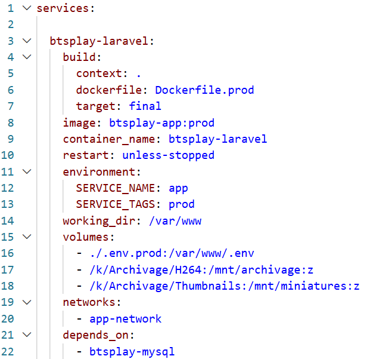
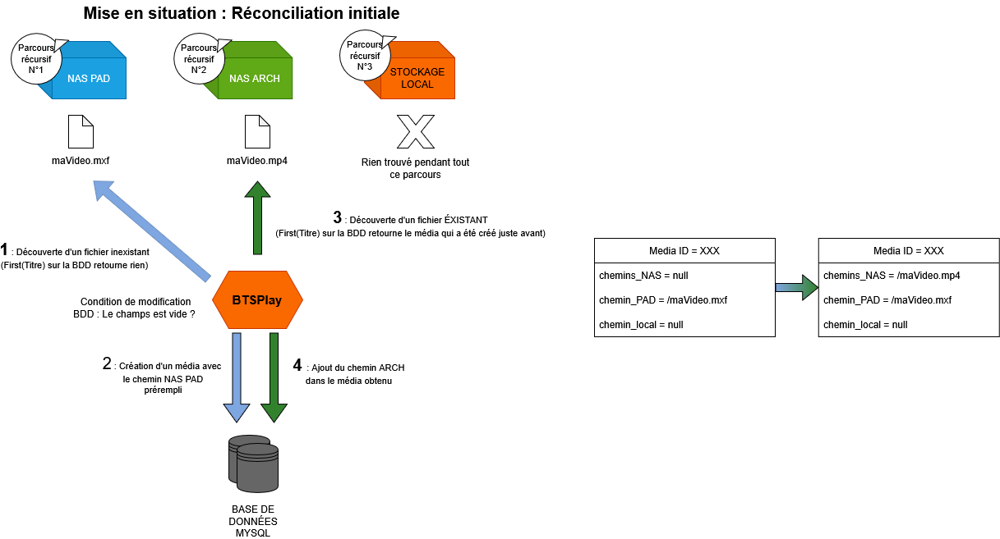
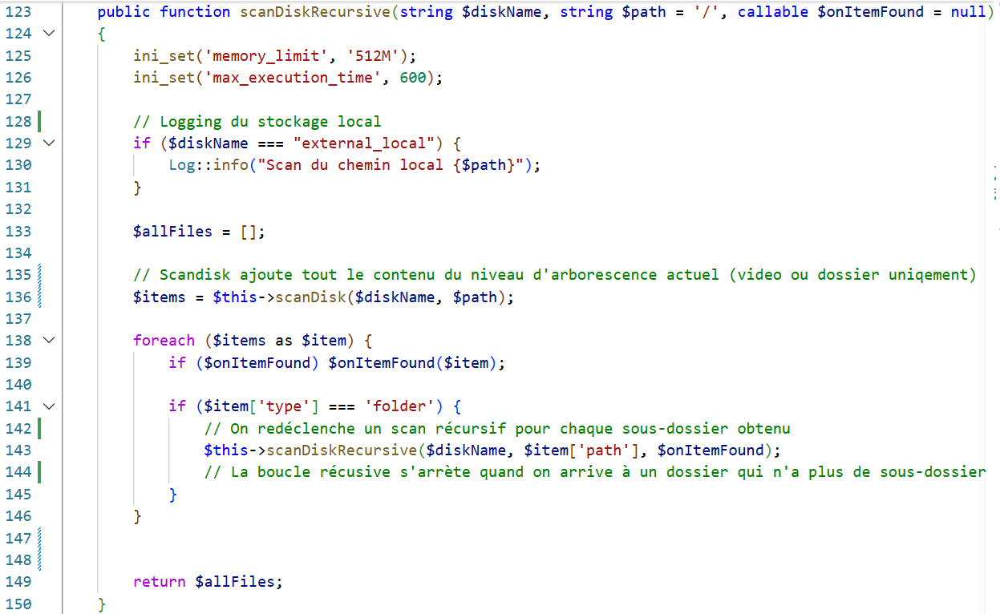
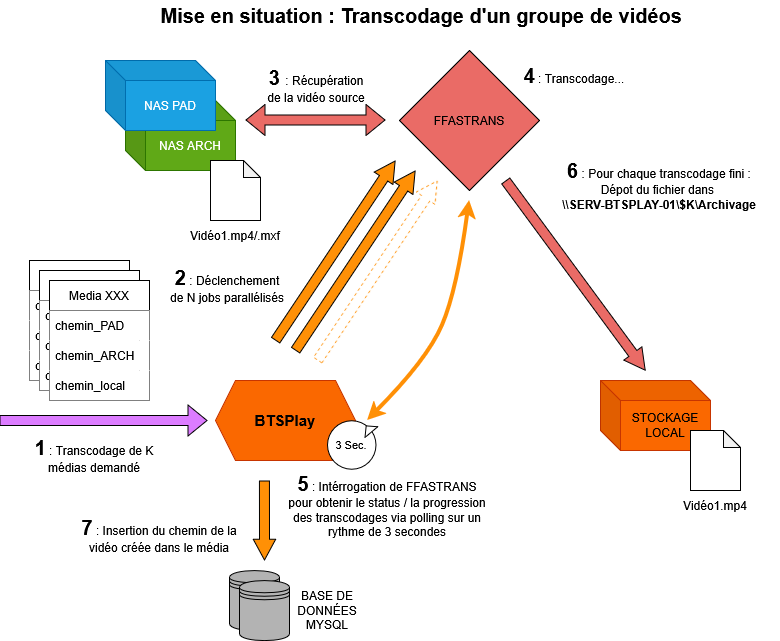
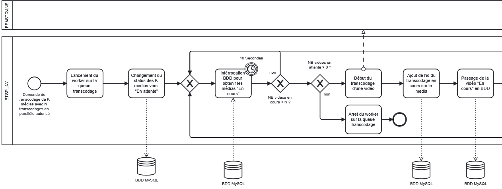
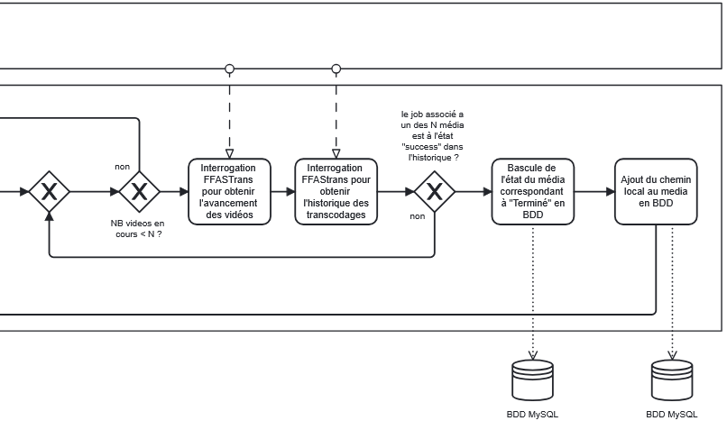
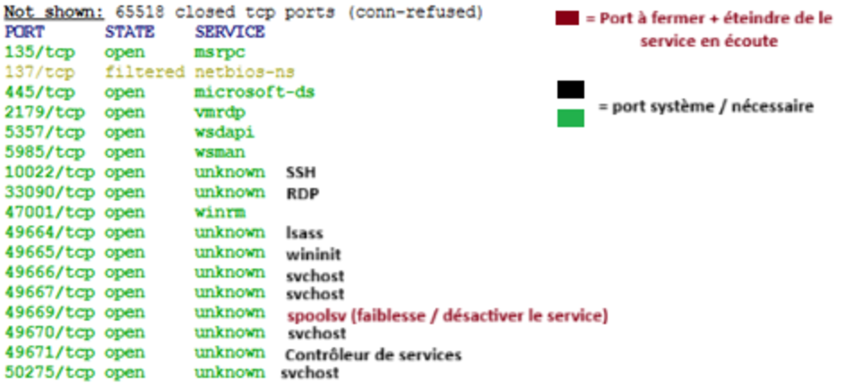
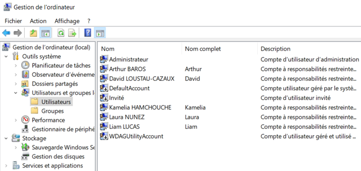
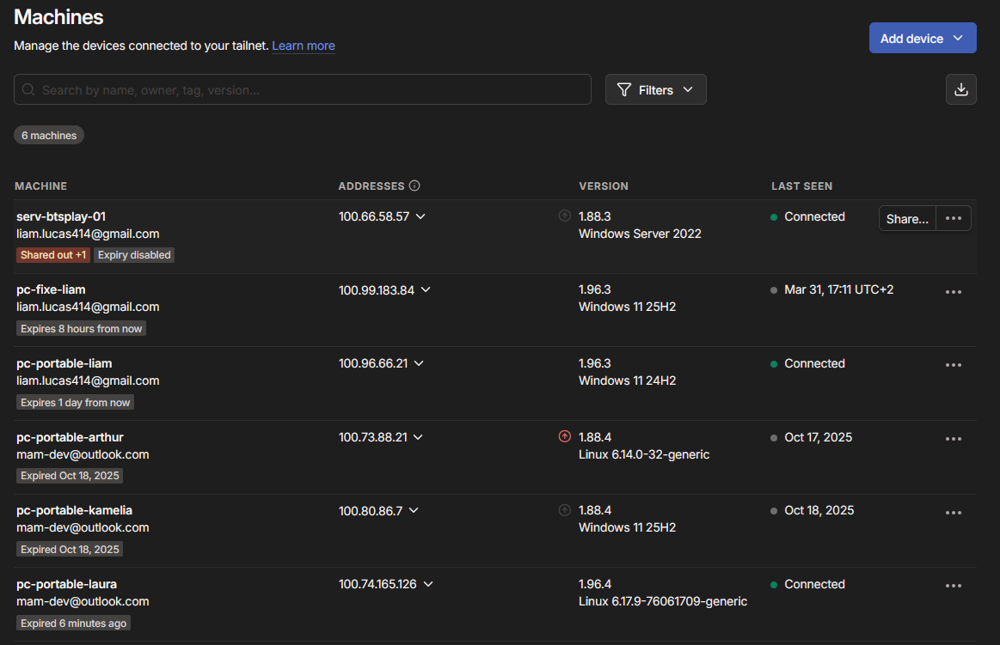
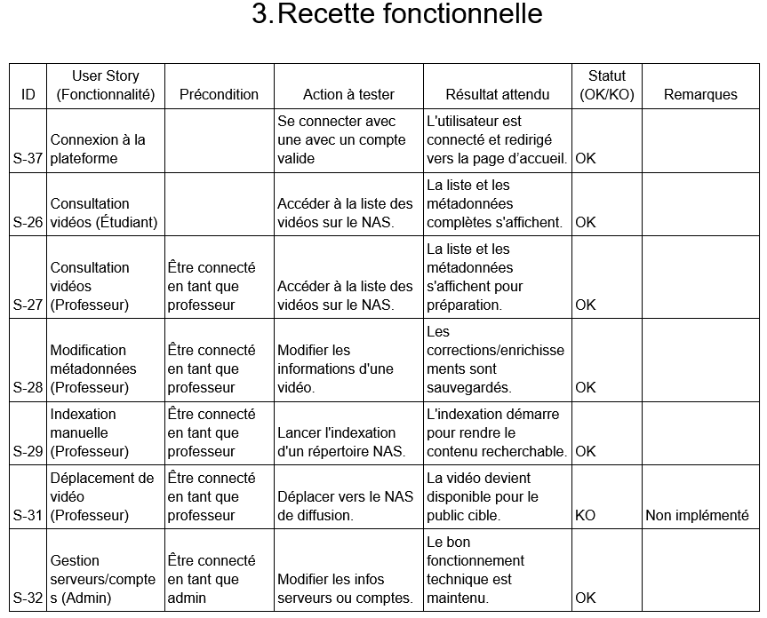

Media Asset Manager
Solution professionnelle de gestion d'actifs vidéo
pour le BTS Audiovisuel du Lycée René Cassin
SAÉ S.6.01 - BUT Informatique 3 Parcours D - IUT de Bayonne
2025 - 2026
Le Contexte
Le BTS Audiovisuel du Lycée René Cassin produit quotidiennement des contenus vidéo professionnels stockés sur deux serveurs NAS distincts. Reprise d'un projet initié en 2024-2025 dont la livraison n'était pas exploitable.
NAS PAD (MXF)
XDCAM HD 50Mb/s - Prêt à Diffuser, qualité maximale pour le montage
NAS Archivage (MP4)
H.264 25Mb/s - Archivage et consultation web
Mission : Développer un MAM adapté aux besoins du BTS : détection et indexation des fichiers sur les NAS, enrichissement de métadonnées, visualisation web, et transfert/transcodage via FFAStrans
L'Équipe
5 étudiants de BUT Informatique 3 - Parcours D (IAMSI)
- BAROS Arthur - Proxy PO
- HAMCHOUCHE Kamelia - Scrum Master
- LOUSTAU-CAZAUX David - Réf. Technique
- LUCAS Liam - Réf. Qualité
- NUNEZ RODRIGUEZ Laura Elena - Réf. Frontend
IUT de Bayonne - SAÉ S.6.01 - 2025-2026
Commanditaire : M. MARTIN Philippe (BTS Audiovisuel Lycée René Cassin)
github.com/brs64/Media-Asset-Manager
Fonctionnalités Clés
Découverte & Indexation
Indexation automatique des vidéos sur les deux NAS avec réconciliation intelligente
Lecture Vidéo Web
Streaming HLS adaptatif avec génération de miniatures
Transcodage Professionnel
Intégration FFAStrans pour conversion MXF ↔ MP4
Gestion des Utilisateurs
Authentification et permissions (Étudiants, Professeurs, Admins)
Recherche Avancée
Moteur de recherche avec filtrage
Panel Administrateur
Synchronisation, réconciliation, logs, backups et import CSV d'élèves
Cas d'Usage Concrets
Étudiant en production
Dépose un MXF sur le NAS. BTSPlay indexe, génère une miniature et transcode en MP4.
Professeur en évaluation
Recherche les projets d'une promotion via filtres, visionne dans le navigateur et commente les métadonnées.
Admin en maintenance
Déclencher les transcodages nécessaires via liste d'attente.
⬇️ Scénarios avancés
Scénarios Avancés
Import massif de promotion :
L'admin importe un CSV avec 50 étudiants. Le système crée automatiquement les comptes et attribue les rôles.
Sauvegarde de la BD :
L'admin peut lancer une sauvegarde manuelle de la base de données. Une copie .sql est générée et stockée sur le serveur.
Réconciliation de NAS :
L'admin lance une réconciliation qui compare les fichiers entre NAS PAD et NAS Archivage, identifie les manquants et déclenche les transcodages nécessaires.
Démonstration Live
Application en action sur serv-btsplay-01:8080

Partie Contributive
Livraison effective de l'application
Stack Technique
Backend
Laravel 12 MySQL 5.7 Spatie Permissions PHPUnit MockeryFrontend
Tailwind CSS 4.0 Alpine.js Plyr HLS.js ViteInfrastructure
Docker Compose Nginx FFAStrans phpMyAdminArchitecture Système
Services Docker Production (5 conteneurs)
- btsplay-nginx - Reverse proxy (8080)
- btsplay-laravel - Application PHP-FPM
- btsplay-queue - Worker transcodage
- btsplay-mysql - Base de données
- btsplay-phpmyadmin - Admin DB (8001)
Image btsplay-app:prod multi-stage | Accès NAS via SMBv1
Schéma d'Architecture

Docker-compose de production

Défis Techniques Relevés
Synchronisation bi-directionnelle
Réconcilier des deux NAS avec des fichiers dans différents formats et éviter les doublons
Ajout de données personnalisées hétérogènes
Stockage format JSON et ajout des éléments d'interface pour intéragir facilement avec en BDD
Transcodage des vidéos
Transcodage de vidéos longues / nombreuses sans bloquer l'interface, avec gestion des échecs et reprises
Permissions granulaires
Système de rôles adaptée permettant un contrôle fin des accès selon le profil utilisateur
⬇️ Solutions apportées
Nos Solutions
Pour la synchronisation (ou réconciliation) :
- Algorithme d'indéxation BDD de toutes les vidéos des différents répertoires basé sur un parcours d'arborescence récursif asynchrone
- Double role de nétoyage BDD pour les vidéos qui sont supprimées des NAS / inéxistante
Pour l'ajout de données:
- Création d'un nouveau champs au format JSON pour chacun des médias
- Ajout d'éléments d'interfaces pour l'autocompletion et possibilité d'ajouter de nouveaux élèves avec des fichiers CSV
Pour le transcodage :
- Implémentation d'une file d'attente pour l'envoi d'un gros volume de vidéos
- Transcodage "par dossier" pour améliorer l'UX
Pour la gestion des roles :
- Ajout du package Spatie au projet, qui gère la créarion de permissions personnalisées
- Implémentation des roles "Admin" et "Professeur" avec des droits adaptés (vérouillage partiel du panel d'administration, ...)
Présentation du processus de synchronisation

Présentation du processus de synchronisation

Présentation du processus de transcodage

FFAStrans
Moteur de workflow de transcodage piloté par BTSPlay via API HTTP (port 65445)

Présentation du processus de la file d'attente

Présentation du processus de la file d'attente

Tests PHPUnit
215 tests - 16 fichiers - BDD SQLite in-memory - 10s
Médias (91 tests)
Controllers, miniatures, indexation, streaming
Transcodage (45 tests)
FFAStrans, transferts, jobs asynchrones
Navigation (41 tests)
Recherche, explorateur de fichiers, arborescence NAS
Administration (38 tests)
Panel admin, permissions, profils, authentification
⬇️ Couverture
Couverture : Objectif et Résultat
Objectif : 70%
Standard professionnel visé, priorisation des composants critiques
Résultat : 66% lignes

Exemple de test

Déploiement
Serveur SERV-BTSPLAY-01
Windows Server 2022, on-premise au Lycée - 2x12 coeurs, 16 Go RAM - Docker Desktop - Opérationnel depuis octobre 2025


Sécurisation
Accès distant
Tailscale VPN (Wireguard) avec 2FA obligatoire, ré-authentification quotidienne
SSH
Port obfusqué (10022), clé publique uniquement, admin interdit
Firewall
Audit NMAP, ports fermés, spouleur d'impression désactivé, scripts PS bloqués
Comptes
Utilisateurs sans privilège, moindre privilège, verrouillage après 3 tentatives
Sécurisation
Audit des ports ouverts

Comptes créés

Sécurisation
Configuration VPN

Bilan Cahier de Recettes
15 US OK
- Connexion / Accès non autorisé
- Consultation vidéos (Étudiant/Prof)
- Modification métadonnées
- Indexation, Recherche, Navigation
- Réconciliation, Logs, Backup
- Gestion serveurs, Création champs
3 US KO / NOK
- Déplacement vidéo vers NAS diffusion (S-31)
- Extraction métadonnées techniques FFAStrans (S-10)
- Suppression vidéo (Prof/Admin)
5 US à améliorer
- Retour visuel réconciliation
- Priorisation jobs FFAStrans
- Cache arborescence NAS
- Miniature plus pertinente
- Filtrage secondaire recherche

Cahier de recettes

Partie Conclusive
Synthèse et positionnement
Outils de Développement et Collaboration
Documentation Technique
Génération automatique avec Doxygen
Documentation complète du code PHP, classes, méthodes et relations
Gestion de Projet
Jira Software en méthodologie Scrum
Backlog, sprints, burndown charts et suivi des user stories
Versioning de Code
GitHub avec branches et pull requests
Workflow Git collaboratif, revues de code et historique complet
Tests et Qualité
PHPUnit avec couverture de code
215 tests automatisés garantissant la stabilité de l'application
⬇️ Aperçu des outils
Documentation Doxygen
Documentation technique générée automatiquement depuis les commentaires PHPDoc
Exemple : MediaController::index()
/**
* @brief Affiche la liste des médias avec filtres et pagination.
*
* Récupère les paramètres de recherche depuis la requête HTTP
* et délègue la récupération des résultats au MediaService.
*
* @return \Illuminate\View\View Vue "home" avec liste paginée
*/
public function index()
{
// List all media with pagination via service
$medias = $this->mediaService->searchMedia(request()->all());
return view('home', compact('medias'));
}
Documentation complète disponible en ligne :
brs64.github.io/Media-Asset-Manager
Gestion de Projet Agile - Jira
Backlog structuré
User stories priorisées avec critères d'acceptation et story points
Sprints de 2 semaines
Planning poker, daily scrums et rétrospectives d'équipe
Suivi de progression
Burndown charts et vélocité pour anticiper la livraison
Gestion des tâches
États des user stories, assignations et historique des modifications
Tableau Scrum accessible ici :
mam-bts.atlassian.net/jira
Versioning et Collaboration - GitHub
Workflow Git robuste
Branches par fonctionnalité, pull requests avec revue de code obligatoire
Historique complet
182 commits traçant l'évolution du projet depuis octobre 2025
Documentation README
Guide d'installation Docker, configuration des NAS et déploiement
Collaboration en équipe
Revues de code systématiques et gestion des conflits
Dépôt GitHub du projet :
github.com/brs64/Media-Asset-Manager
Positionnement Individuel
Arthur BAROS - Proxy PO
Relation commanditaire, documentation Doxygen, rôles et permissions Spatie
Kamelia HAMCHOUCHE - Scrum Master
Pilotage agile, tests fonctionnels, gestion des utilisateurs et import CSV élèves
David LOUSTAU-CAZAUX - Réf. Technique
Architecture Docker dev/prod, tests unitaires et d'intégration, sécurisation et déploiement
Liam LUCAS - Réf. Qualité
Tests et documentation PHPDoc/Doxygen, gestion des miniatures, streaming, sécurisation et déploiement
Laura Elena NUNEZ RODRIGUEZ - Réf. Frontend
Interface transferts et administration, transcodage par dossier, recherche et UX
En Résumé
BTSPlay est un MAM professionnel développé pour répondre aux besoins réels du BTS Audiovisuel du Lycée René Cassin.
✓ Indexation automatique de deux NAS distincts (MXF + MP4)
✓ Streaming HLS performant avec génération de miniatures
✓ Transcodage asynchrone via FFAStrans
✓ Permissions granulaires (Étudiants, Professeurs, Admins)
✓ Stack moderne : Laravel 12, Tailwind CSS, Docker
✓ 215 tests PHPUnit avec 66% de couverture
✓ Déploiement sécurisé avec Tailscale VPN
✓ 15/18 US validées en cahier de recettes
Solution production-ready déployée sur SERV-BTSPLAY-01, utilisée au quotidien par le BTS Audiovisuel
MAM complet pour le BTS Audiovisuel du Lycée René Cassin
Merci de votre attention !
Des questions ?